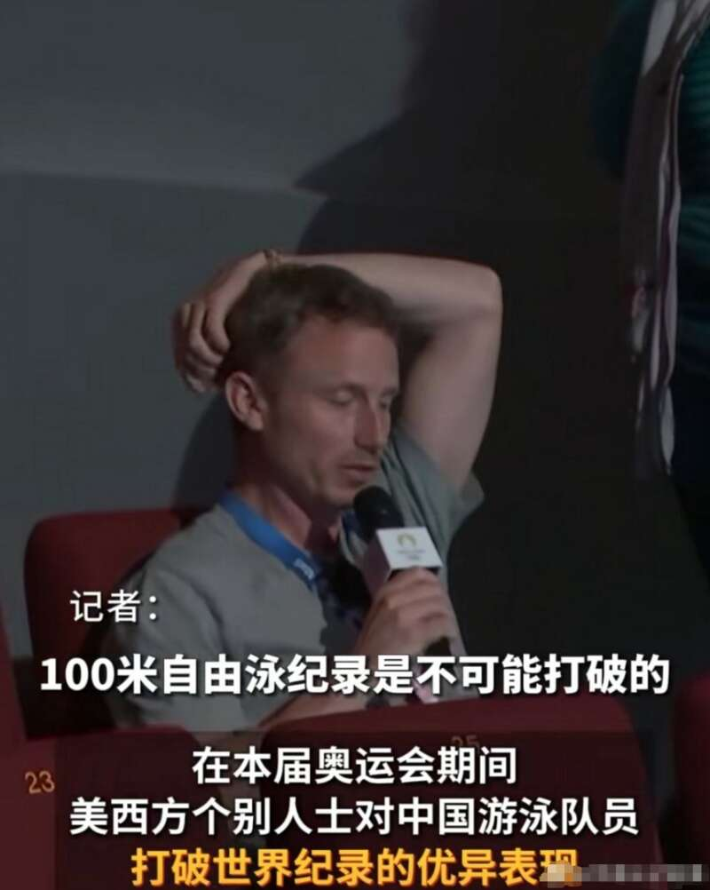
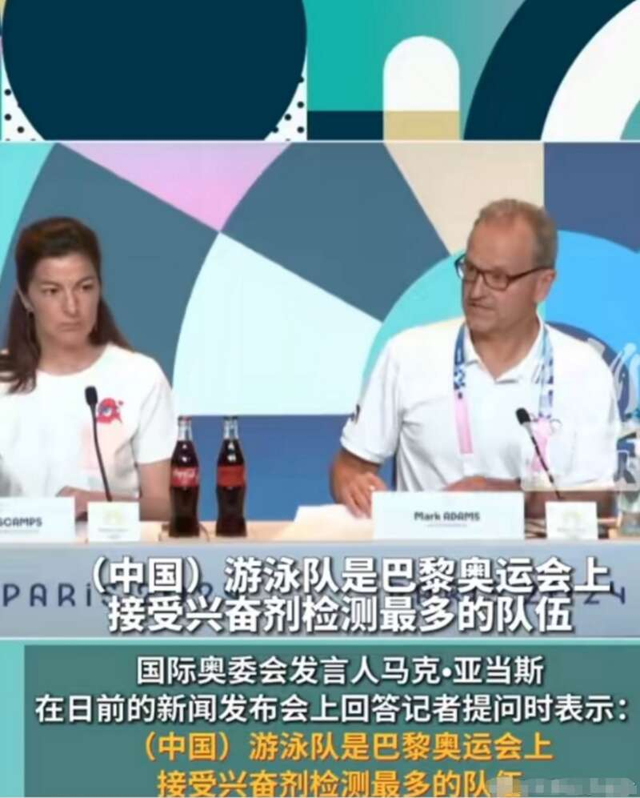
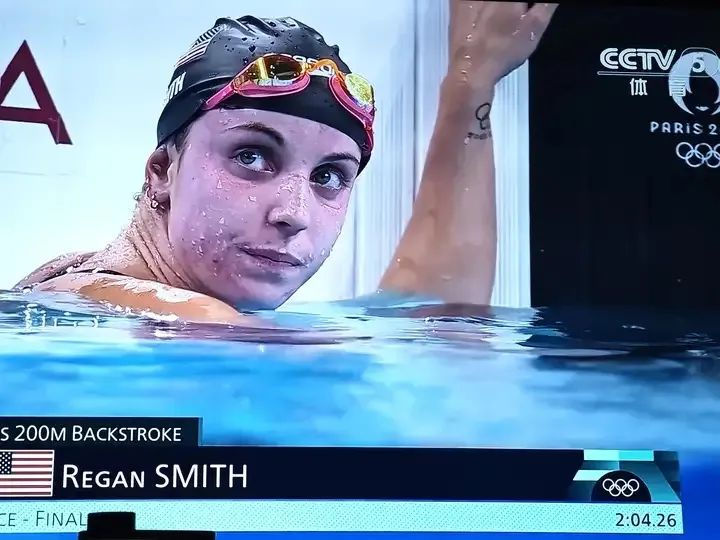
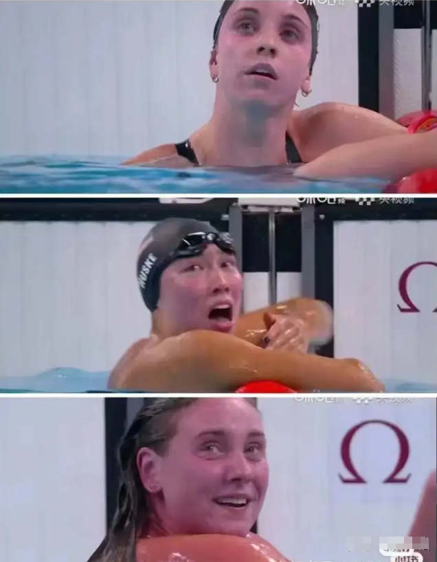
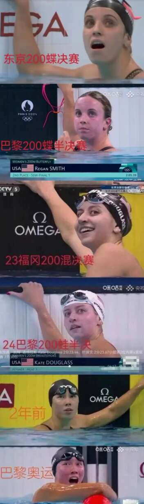
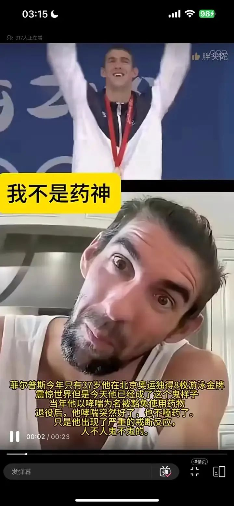
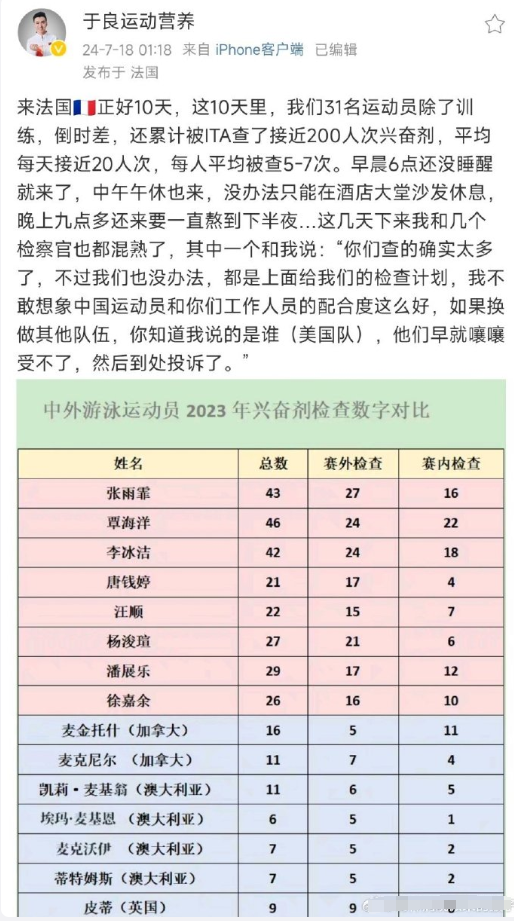

本届巴黎奥运会上，中国选手潘展乐在男子100米自由泳决赛中游出了46秒40的成绩，创造了新的奥运世界纪录并取得冠军，同时打破了他自己在2024年2月11日卡塔尔多哈世界游泳锦标赛上创造的46.80的世界记录。潘展乐的速度之快，足足领先了第二名一个身位那么夸张。
对比一下，曾在2008年北京奥运会上夺得八金的迈克尔·菲尔普斯，号称国际泳坛历史上最伟大的游泳运动员，100米自由泳的最好成绩是47.51秒，潘展乐的成绩足足比菲尔普斯快了1秒，你要知道这可是奥运会成绩。
对于这个成绩，美国坚决不认可，先是派出澳洲教练布雷特-霍克在社交媒体上称：
“那不是真的，你不可能打败那些选手——凯尔·查尔默斯、大卫·波波维奇、杰克·阿莱克西——你不可能在100米自由泳比赛中以一个身位的优势打败他们。这在人类看来是不可能的，OK？”
然后又派出记者称奥运会100米自由泳记录是不可能被打破的，暗示潘展乐的成绩一定是靠吃兴奋剂换来的。

对于这个提问，奥委会发言人的回答是中国游泳队是巴黎奥运会上接受兴奋剂检测最多的队伍，今年以来已经接受了600多次兴奋剂检测，直接把这种恶意提问怼了回去。
这个记者的提问不仅非常恶意而且非常奇怪，什么叫100米自由泳的记录是不可能被打破的？大家参加奥运会不就是为了打破奥运会记录吗，如果奥运记录不可能被打破那我们还参加奥运会干嘛。白人无法打破100米自由泳的奥运记录就等价于人类不可能打破，这位记者就算想抹黑中国队的成绩也不至于说拿出如此自大的说辞吧。但事实上，他们真的是这么想的。一般情况下昂撒人是输得起的，虽然输了也会叽叽歪歪但都是认账的，没有奥运精神的是代表是韩国而不是昂撒国家。但游泳领域的奥运记录被中国人刷新，还是超高成绩破了奥运记录，这个昂撒人真的认为是不可能，他们的第一反应就是潘展乐绝对是吃了一种超强的兴奋剂，之所以没有被检查出来那是因为这种兴奋剂刚被人类研发出来，目前地球上还没人知道。这种想法在中国人看起来是莫名其妙，但在昂撒国家看起来却是理所当然。以美国队为例，这次美国游泳队全体成员在比赛完之后都变成了“紫薯精”，整个脸都呈现一种很不正常的紫色。
不是某一个美国游泳队员脸部深紫色，而是所有美国游泳队员都脸部呈现紫薯颜色，不止是队里的白种人脸部颜色异常，就连队里的黄种人脸部颜色也异常。
而在美国队之外，不管是哪个国家的白种人和黄种人，在同一个泳池里，脸色都是正常的，就连欧洲队都是正常的。而这些美国队的同一个成员，在去年以及前年的国际比赛中，游泳完之后就不会出现脸色异常。
在医学领域，一个人类的脸色如果出现如此可怕的颜色，要么是严重缺氧，要么是心脏病突发，要么就是用了药物。美国队的全体队员们很明显不是严重缺氧，很明显不是心脏病，所以他们肯定是吃了药，虽然不知道他们吃的是什么药，但可以断定这种药一定和人体的血红素有关。你这话的意思，是美国队在集体吃兴奋剂？话可不能乱说啊，这是很严重的指控，美国队也是参加了尿检的，如果吃了兴奋剂肯定会被查出来的。这你就错了，奥组委是绝对查不出来美国队吃兴奋剂这件事的。因为历史上从未有过兴奋剂能让人类脸色紫成这个样子，所以可以断定这次美国队服用的药物绝对不在奥运会的兴奋剂禁药名单上，因此可以断定这次美国队的兴奋剂尿检结果绝对是合格的。这里要科普一个常识，并不是说你吃了兴奋剂就算违规，而是说你吃了奥组委禁药名录上的兴奋剂才算违规。理由很简单，世界上的化合物有无穷多种组合，你怎么断定哪种物质算兴奋剂哪种物质不算？在很久很久以前，奥运会是没有兴奋剂检查这一说的，因为人类就没有兴奋剂这个概念。后来某个医药研发特别强大的国家，在上世纪六十年代发现给运动员服用某些特定药物可以大幅提升运动员的成绩，于是就开始给本国队员大规模服用这些特定药物，狂揽金牌。一段时间后，随着服药人员数量的增加，随着部分队员的退役，这一“秘密武器”被其他国家所知晓，于是大家就都开始服药参赛，而这些药物实际上对运动员的身体是有损伤的。后来奥组委就定了统一规则，任何人都不准服药，把已知的这些“特定药物”全部列为禁药，谁吃了就查出来就取消谁成绩。这就是兴奋剂的起源，而这个发明兴奋剂的国家就是美国，奥运会之所以有严查兴奋剂的规矩就是因为当年美国人对自身强大药物研发实力的“独特利用”。但奥组委只能把那些已知的兴奋剂列为兴奋剂，未知的不行，毕竟奥组委只是奥组委，不是药物研发企业，世间的化合物组合千万种起步，鬼知道每种化合物人类吃下去之后会有什么效果。而人类最强的药物研发企业大部分在美国，少部分在欧洲，这些企业在进行药物研发测试的时候，如果发现某种药物虽然没有对治疗疾病有效果，但对提升人类某项身体机能有效果，也一样会被列为“潜力药物”，首先提供给的就是本国的运动参赛人员，因为他们愿意为这个付费。药企研发出的新药物给比赛运动员吃了之后，过几年大家就都知道了，然后就会被奥组委列为新的兴奋剂并予以禁用。于是奥组委的兴奋剂名单就在初建后不断的变长，变的越来越长。2024年的巴黎奥运会，明文颁布的《兴奋剂名录》共有391种，只要服用其中之一就算吃了兴奋剂。这代表人类已经发现了足足391种药物可以提升人类的身体机能，在兴奋剂这个概念出现后的短短几十年之内。研发一种新药是很贵很贵的，人类最强的药物研发企业也没这个实力，这是整个欧美所有的药企携手合作才能创造出来的奇迹。奥组委能做的，就是跟着这些欧美运动员队伍不断嗑新药之后，不断的补充扩大兴奋剂名录。这种做法是完全合规的，毕竟这种新药从来没有人说过不能吃，法无禁止即可为，所以吃这种新药是完全合法的。至于你们国家没有新药可以吃，那只能说明你们国家的药物研发实力太差，奥运会本身也是国力的一种体现， 你要是觉得这个规矩不合理那你就提前说明哪种东西是不能吃的，要是说不出来那就愿赌服输，按规矩玩。在美国别说运动员，就连普通健身圈都疯狂用药，而且药物种类特别多，能定点扩大肌肉的药物有，能增强肌肉恢复速度的药物有，能强化有氧能力的药物也有，啥啥都有，那些肌肉强大到明显异于常人的健美选手，平时全都是靠吃药来塑形的，需要比赛检测的时候他提前停药就完事了。
因为药物的广泛应用以及自身在药物研发上的独特“国力优势”，所以美国以及欧洲特别喜欢那种可以简单粗暴靠兴奋剂提升成绩的领域，如田径和游泳。因此在欧美的联手之下，田径和游泳的金牌数量被大幅扩大，明显异常于其他赛事。比如说中国队的强项乒乓球比赛，奥运会总共只有5枚金牌，分别为男子团体、女子团体、男子单打、女子单打和混合双打。很正常对吧，但只有5枚金牌那是因为在乒乓球领域兴奋剂的效果并不显著，这个运动对灵巧性的要求太高。游泳项目，奥运会总共会诞生35枚金牌，是乒乓球项目的7倍。只是游个泳而已，硬是要分出自由泳、蝶泳、混合泳和接力。然后在这个基础上还分为50米、100米、200米和400米，以及4×100米和4×200米接力等等，自由组成和35项比赛，总共提供35枚金银铜牌。而田径比赛只是跑个步而已，非要分成短跑、中跑、长跑、超长距离跑、跨栏跑、障碍跑、接力跑。然后还有100米、110米、200米、400米、800米和1500米、5000米和10000米等不同规格，和上面的大类进行自由组合后产生了48个项目，总共提供48枚金银铜牌。乒乓球共有5大类18种打法，按游泳和田径的逻辑，那完全可以分为快攻类、反手类、弧圈类、削攻类，每种比赛只允许用特定的打法，还可以添加障碍乒乓、跨栏乒乓等大项。在大项之下，可以分为11球制、22球制、44球制以及88球制等等，总共组合出四五十种比赛完全不成问题，每次奥运会可以诞生50枚金银铜牌出来。之所以没有这样做，是因为欧美不同意，而欧美想扩大田径游泳的奖牌数量就可以做到，那是因为欧美的国力强大，他们一致同意的事情奥组委无力抵抗。在这个基础上，欧美奥运队员还大量的患病，大量的申请“药物豁免”。美国的游泳队被称之为“哮喘队”，因为里面有大量的队员被奥组委认定为“哮喘病人”，需要定期服用哮喘药物，那么这些药物被检出阳性就不能算是吃兴奋剂。美国的体操运动员几乎全员患有“多动症”，也需要定期服药。比如说曾经创造游泳奇迹的菲尔普斯，就是奥组委认证的哮喘病患者以及癫痫病患者，可以豁免对应药物的检验，允许菲尔普斯参赛时服用治疗哮喘的药物和治疗癫痫的药物。就这么一个百病缠身的患者，打破了人类游泳的世界记录，一次奥运会狂揽8枚金牌。但在退役后，菲尔普斯的哮喘和癫痫奇迹般的好了，再也不用定期服药了，但在2008年北京奥运会时还壮硕如牛的菲尔普斯，如今才39岁就形销骨立，衰弱如老人。

如果身体有病，参加奥运会居然可以获得药物豁免权？那我也说自己身体有病行不行？不好意思，不行，因为哪个运动员可以有病，哪个运动员不能有病，是奥组委认定的。2015年美国的运动员申请药物豁免权653人，奥组委批准了402人。俄罗斯被批准人数低于20人，中国队被批准人数低于10人，和美国队的人数差了几十倍。所以在游泳和田径领域欧美是有绝对自信的，不仅人种占优，而且兴奋剂的使用和解释权都在欧美手上。全人类所有顶尖药物研发企业都在欧美，而欧美也因为国力强大长期掌控奥运会，所以规矩就这么个规矩，你同意就参赛，不同意就别来玩。结果连菲尔普斯这样的顶尖选手，以透支损坏身体为代价，在获得用药豁免权后大吃特吃各种药物，最后游出来的成绩比中国的潘展乐足足少了1秒多那么离谱。在0.1秒就分出金银铜牌的奥运比赛中，1秒的差距那就是吊打，两者根本不是一个维度的运动员。如果潘展乐真的没吃兴奋剂，就是凭自身游出了这个成绩，那欧美成啥了？我们用尽了最先进的药物才游出这种成绩，你说你没吃兴奋剂？鬼才信。中国游泳队在巴黎遭遇了极其苛刻的兴奋剂检查，10天被查了200人次，平均每个运动员每天被检查5~7次兴奋剂，工作人员突然出现让你尿尿你就必须立刻尿尿那种。
而美国运动员是世界上接受兴奋剂检测最少的运动员群体，这是世界反兴奋剂机构现任主席班卡亲口说的数据。虽然每天检查潘展乐5~7次但依然没有查出兴奋剂，但那肯定是因为中国研发出的新型药物，全人类都不知道的那种，否则潘展乐绝不可能有如此成绩。美国人这么想，是以已度人，因为自己的队员一直磕药都游不出这种成绩，中国人怎么可能做得到。虽然奥组委禁药名录中的兴奋剂大部分是美国贡献的，少部分是欧洲贡献的，但那都是以前的，如今中国的国力也强大了，说不定他们也具有了研发新型药物的能力。但美国人错了，如果我们中国真的具有这样的药物研发能力，那这种神药一定第一个给男足队员吃。倒是美国，这次所有游泳队员全体脸色呈现严重异常的紫薯色，可以毫无疑问的说肯定是嗑药了，无非就是磕的药肯定不在现有的禁药名录上而已，否则不敢如此肆无忌惮，而且人类已知的所有兴奋剂都没有能够让人脸色呈紫薯色这种效果。至于这次美国队磕的到底是什么药，过几年全人类就都知道了，到时候奥组委的禁药名录会补充的，过去几十年一直都是这么过来的。论药物研发美国确实是世界第一，但100米自由泳的世界第一不是美国，全体队员嗑药也不是美国。